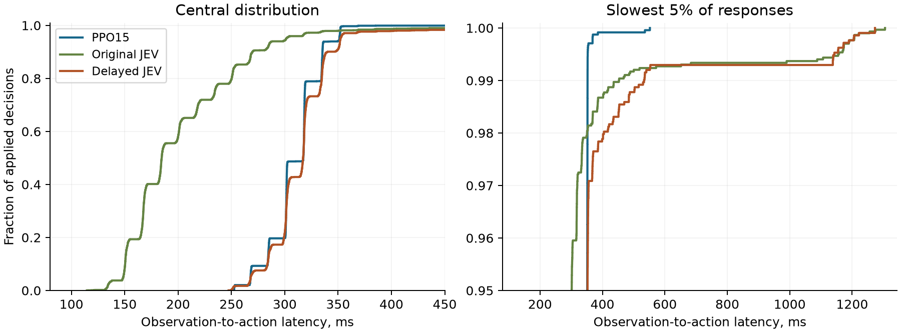

Supplementary methods and analyses
A. Behavior-cloning lineage
Training starts from the official pretrained Qwen3.5-0.8B weights with a fresh rank-eight LoRA adapter. Five Courtyard BC epochs precede four multi-level BC epochs. The latter starts from the former's saved adapter with a fresh optimizer. “BC04” names the fourth multi-level epoch, not the fourth supervised epoch overall.
| Stage | Distinct training decisions | Epochs | Example presentations | Optimizer updates | Learning rate |
|---|---|---|---|---|---|
| Courtyard BC | 779 | 5 | 3,895 | 125 | 5 × 10−5 |
| Multi-level BC | 4,423 | 4 | 17,692 | 556 | 10−5 |
Courtyard BC accounts for about 18% of the combined example presentations and 18% of the optimizer updates. Its learning rate is five times higher. Its Courtyard validation cross-entropy fell from 4.005 to 0.519. These observations establish that it was a substantive fitting stage; they do not measure its contribution to later Head Goon performance. No ablation omits this stage, so I do not assume its effect was smaller than the later stage's.
The multi-level stage weights trajectories equally within each level and assigns level mass proportional to the square root of its number of training trajectories. Training, validation and held-out splits have 4,423, 1,360 and 1,632 decisions from 70, 26 and 21 trajectories. Recorded request-time delay estimates stay attached to their demonstration labels. Counts and source hashes.
B. Policy, critic and optimization
The base revision and checkpoint hashes are recorded in study.json. Training uses AdamW, rank-eight LoRA and gradient norm clipping at 1. The configured Modal worker has one A10 GPU, four CPU cores and 24 GiB host memory. Inference and PPO forward passes are singleton; gradient accumulation gives an effective PPO batch of 64.
| PPO setting | Value |
|---|---|
| Actor / critic learning rate | 3 × 10−6 / 10−3 |
| Collection minimum | 512 decisions and 8 complete episodes per iteration |
| PPO passes / clip / entropy coefficient | 2 / 0.2 / 0.01 |
| KL target / global stop / per-level stop | 0.02 / 0.03 / 0.06 |
| Discount per frame / GAE decay per 20 frames | 0.9997 / 0.99 |
| Critic network | LayerNorm → Linear 1024→128 → tanh → Linear 128→1 |
| Critic fitting | Huber loss; up to 200 epochs; whole-episode validation every 25; restore best fit and optimizer |
The critic input is a detached 1,024-dimensional hidden representation from Qwen; 1,024 is the loaded model's hidden width. Its output is a scalar estimate of discounted remaining reward. Fixed generalized-advantage targets combine realized rewards and request-time value estimates. Initial critic fitting uses retained BC04 Head Goon episodes before the first PPO rollout. Continuation preserves actor, critic, optimizer and RNG state. The actor's optimizer reaches step 288 after iteration 16 and step 270 at PPO15.
Historical runs included sampled monitoring evaluations. These supplied no PPO or critic targets and did not change the training state used for continuation. The researcher chose the reported checkpoint using later dedicated evaluations. Original training records retain all monitoring outcomes and state provenance.
B.1. The 18 physical actions
Every row below is combined with each of the three throw columns. The action-list index runs from 0 through 17 in row-major order. Equal joint probabilities are resolved by the earliest entry.
| Movement / A control | No throw | Flat throw | Lob throw |
|---|---|---|---|
| Neutral / released | 0: Neutral / released + none | 1: Neutral / released + flat | 2: Neutral / released + lob |
| Neutral / held | 3: Neutral / held + none | 4: Neutral / held + flat | 5: Neutral / held + lob |
| Left / released | 6: Left / released + none | 7: Left / released + flat | 8: Left / released + lob |
| Left / held | 9: Left / held + none | 10: Left / held + flat | 11: Left / held + lob |
| Right / released | 12: Right / released + none | 13: Right / released + flat | 14: Right / released + lob |
| Right / held | 15: Right / held + none | 16: Right / held + flat | 17: Right / held + lob |
Qwen's readout supplies six movement/A probabilities and two three-way throw distributions, one for each facing direction. For a candidate action, its joint probability is the movement probability multiplied by the throw probability for the resulting facing. Greedy evaluation maximizes that product over all 18 actions. JEV uses its returned movement choice and the corresponding returned throw choice. These choices are evaluated from the same observation; the description does not imply two sequential API calls. Controls are held until replaced; jump and throw events require fresh button presses. Observation and action contract.
C. JEV with an empirical latency floor
This exploratory experiment asks how JEV performs when most responses are delayed to approximate PPO15's serving latency. A fixed schedule independently samples from all 2,399 recorded PPO15 applied-action delays. Early JEV responses wait until their assigned application frame; late responses are applied when ready. The native game advances throughout. Future targets are hidden from the policy. The schedule is supplied in timing-input.json; reproduction need not reconstruct the historical delay pool.

| Policy | Applied responses | Mean ms | Median ms | 95th percentile ms | 99th percentile ms | Maximum ms |
|---|---|---|---|---|---|---|
| Original JEV | 3015 | 208.3 | 184.7 | 301.4 | 450.4 | 1305.3 |
| PPO15 | 2399 | 309.7 | 317.4 | 351.3 | 352.3 | 552.0 |
| Delayed JEV | 2128 | 320.5 | 317.2 | 352.3 | 532.4 | 1273.2 |
PPO15 and delayed JEV have nearly identical median and 95th-percentile latencies, with differences below 1.1 ms. The mean differs by 10.9 ms, or 3.5%. This is a close empirical match for those central summary measures, not equality of the entire distributions. Delayed JEV's 99th percentile is 532.4 ms versus PPO15's 352.3 ms. Delayed JEV has 15 of 2,128 responses above one second; PPO15 has none of 2,399. Original JEV already has a slow tail, with 19 of 3,015 responses above one second.
In total, 168 of 2,128 delayed-JEV applied replies exceed their assigned target frame, or 7.9%. The independent schedule does not recreate relationships between prompt state, prompt length and latency, or correlations across successive requests. Terminal replies that never affected the game are excluded from this applied-response distribution and retained in the original audit. These limits prevent treating the experiment as exact timing parity.
Original JEV wins 30/50 scenarios and delayed JEV wins 14/50. Original-only wins number 21 and delayed-only wins number 5. The original-minus-delayed difference is 32 percentage points, with nominal paired 95% bootstrap interval 14 to 50 and exact McNemar p = 0.00249. This is evidence of sensitivity to the delay intervention in these runs. It does not isolate a universal latency effect or explain the entire JEV–PPO difference.
Applied-response data and source hashes · Distribution summaries · All recorded evaluation outcomes. The main tables use means of episode medians; this appendix pools responses to describe the full distribution.
D. One-frame sensitivity check
In a separate exploratory check, PPO15 advances one frame after action application before the next observation. Its timing instructions change accordingly. It wins 15/30 original-encounter games and 19/30 randomized scenarios. Historical six-frame results on the same 30 randomized scenarios are 17/30. The paired difference is 6.7 percentage points, with nominal interval −16.7 to 30 and exact p = 0.7905.
The original-encounter result differs substantially from the historical 47/50 six-frame wins. However, workers and timing instructions also differ. The experiment establishes sensitivity to the changed deployment protocol, without isolating the frame interval as the cause. It is not used to choose a new training protocol. Recorded evaluation outcomes.
E. Secondary checkpoint and behavioral analyses
Original encounter
| Policy | Wins | Win rate | Nominal 95% interval | Latency, ms |
|---|---|---|---|---|
| PPO10 | 50/50 | 100% | 92.9% to 100.0% | 286 |
| PPO15 | 47/50 | 94% | 83.8% to 97.9% | 285 |
Randomized encounters
| Policy | Wins | Win rate | Nominal 95% interval | Latency, ms |
|---|---|---|---|---|
| PPO10 | 18/50 | 36% | 24.1% to 49.9% | 312 |
| PPO15 | 25/50 | 50% | 36.6% to 63.4% | 310 |
PPO10 wins all 50 original games, but the difference from PPO15 is uncertain, Fisher p = 0.2424. Under variation, PPO15's 14-point advantage over PPO10 has paired interval −4 to 32 and p = 0.2100. Neither result establishes a superior checkpoint across both settings.
On the original encounter, BC04, PPO10 and PPO15 produce 8, 17 and 9 distinct applied action sequences in 50 games each. The largest repeated sequence occurs in 25, 17 and 25 games, respectively. Thus BC04 is already repetitive by this measure. On randomized scenarios each policy produces 50 distinct sequences, which can result from the changed scenarios without indicating 50 distinct strategies.
Pretrained-Qwen baseline
The untouched pretrained model was evaluated on 50 original-encounter games using the same observation and greedy readout as the trained Qwen policies. No LoRA adapter was loaded. The comparisons are unpaired because these are separate fixed-entry cohorts. Recorded evaluation outcomes and baseline comparisons and intervals.
F. Evidence and scope
All completed outcomes in the reported cohorts remain in the analysis. No new gameplay, model inference or API calls were used to prepare this revision. Timing and training-stage analyses use retained records. Checkpoint selection and adaptive extensions remain disclosed; nominal tests have no multiplicity correction.
The included records cover 560 unique completed evaluations. Each row identifies its cohort, source game, outcome and starting-state hash. The original-encounter repetitions and randomized matched scenarios remain separate.